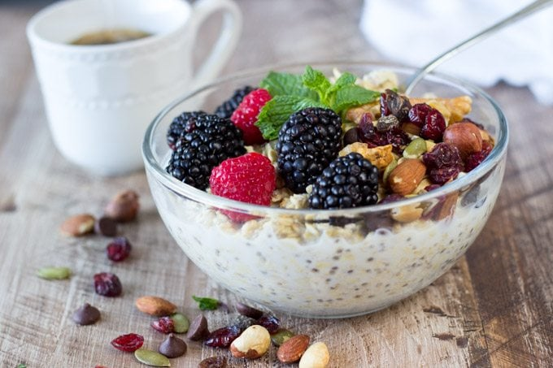

BERRY, MINT & ALMOND CHIA BOWL
- 8.5g|20g(net carbs|total)
- 6.9g protein
- 19g|37%(total fat|sat.)
est.nutritional values per one serving, may vary depending on ingredients used.
INGREDIENTS
- 2 tbsps chia seeds(~ 22g)
- 2 tbsps shredded coconut,unsweetened(~15g)
- 1/3 cup almond milk, unsweetened(~40g)
- 2 med strawberries, washed & quartered(~40g)
- 8-10 blueberried,washed(~20g)
- 1 tbsp sliced alomds
- 2-3 mint leaves,torn
DIRECTIONS
- Mix the chia seeds,coconut and almond milk in a bowl. Set aside for 10 mins
- Add the berries, almonds & mint leaves.
ENJOY!
You can subsitute some of the berried with e.g raspberries or add them to the mix